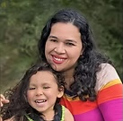
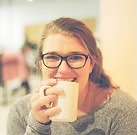

Our People
Meet the Team
Educators, social workers, bilingual coaches, clinicians, and data scientists - united by a belief that relationships are the foundation of everything.
Educators, social workers, bilingual coaches, clinicians, and data scientists - united by a belief that relationships are the foundation of everything.

Founder & Clinical Lead
Founder and Co-Director of Bank Street’s Center for Emotionally Responsive Practice with 30+ years in infant mental health.
Co-Founder & Bilingual Consultant
Bilingual educator bridging language and cultural gaps for Spanish-speaking families across WNC.
Co-Founder & Neurodiversity Consultant
Social worker specializing in strengths-based autism support through Play Project, DIR/Floortime, and TEACCH.
Co-Founder & Clinical Consultant
Licensed clinician specializing in families navigating substance use and recovery.

Co-Founder & Bilingual Consultant
Bilingual autism support specialist ensuring diverse families access the same quality guidance.

Co-Founder & Data Consultant
Public health researcher helping programs tell their stories with evidence and meaning.

Science Communication & Education
Evolutionary biologist making scientific exploration accessible and engaging for everyone.
she / her / hers
Founder & Clinical Lead
MA, MSEd, ITFS, IMH-E® · Infant Family Specialist · Infant Family Reflective Supervisor
Gabriel Guyton walks alongside children and families with careful attention and fierce commitment to inclusive, emotionally responsive education. As Co-Founder and clinical lead of ConnectEd Circles and Co-Director of the Bank Street Center for Emotionally Responsive Practice, she weaves together more than three decades of classroom wisdom, trauma-informed practice, and a deep belief in the power of reflection and relationship.
Drawing from dual master’s degrees - in General and Special Education from Bank Street Graduate School of Education (with a focus on the critical 0–3 window) and in the Psychology of Counseling with a concentration in marriage and family therapy - Gabriel creates safe spaces where educators can grow, children can flourish, and communities can heal together. She holds the Infant Mental Health Endorsement (IMH-E®) as both an Infant Family Specialist and Infant Family Reflective Supervisor.
Her work is anchored in the unwavering belief that every child deserves to be seen, every family’s culture honored, and every educator supported in their journey of growth. After Hurricane Helene devastated Western North Carolina, Gabriel deployed therapeutic playgroups and crisis response interventions in the community, work that became the basis for a manuscript submitted to Young Children (NAEYC). Her published work includes “Using Toys to Support Infant-Toddler Learning and Development” (Young Children, NAEYC, September 2011).
he / him / his
Science Communication & Education
PhD · Adjunct Professor, Columbia University & Mars Hill University
James reckons that curiosity is key to most things that matter, that questions are vastly more interesting than answers, and that he knows a lot less than he lets on. An evolutionary biologist, he has spent nearly three decades working in wildlife research and conservation across East and Central Africa and Southeast Asia.
He is a member of the New York Consortium in Evolutionary Primatology, an adjunct professor at Columbia University and Mars Hill University, and gets weirdly excited about making scientific exploration accessible and engaging for everyone. Within ConnectEd Circles, James brings that same energy to science communication — helping programs translate research into language that connects with families, educators, and communities.
You’ll see these abbreviations throughout our team profiles. Here’s what they mean and why they matter.
The internationally recognized Endorsement for Culturally Sensitive, Relationship-Focused Practice Promoting Infant and Early Childhood Mental Health. Administered in NC through NCIMHA, it requires specialized training, reflective supervision hours, and renewal every three years. Four of our co-founders hold this endorsement - a rare concentration for any practice.
A professional credential issued by the NC Division of Public Health for individuals working with infants, toddlers, and their families. Required by state administrative code for centers serving children birth to three, demonstrating competency in infant-toddler development and family-centered practice.
A clinical license for social workers authorized to provide therapeutic services under supervision. Our clinical consultant uses this training to support families navigating substance use and its impact on children and caregiving relationships.
An advanced degree focused on population health, data analysis, and program evaluation. Our data consultant uses this lens to help programs understand their impact through evidence and storytelling.
We’d love to learn about your program, your families, and how we can support your work.
Get in Touch →